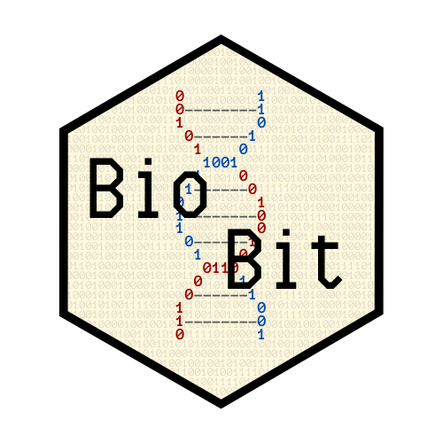

BioBit is a blog dedicated to spread and communicate bioinformatics to society. I made it using the R package distill and to publish it I used Netlify, because GitHub pages force me to have it as a subdomain of my personal website.
My goal with the blog is posting basic things and recent advances about bioinformatics, as well as some biology and computer science -although I won’t post much about it, since I am a bioscientist rather than a computer one-.
Moreover, I have also explained how I made the blog using Rmarkdown and distill, as well as the steps I followed to make my personal website using a simple Rmarkdown page and why I changed to a Distill Blog for it.
I wish that you will like what I have to say and you will have fun reading it.
You can take a look at the blog at https://biobit.netlify.app.
